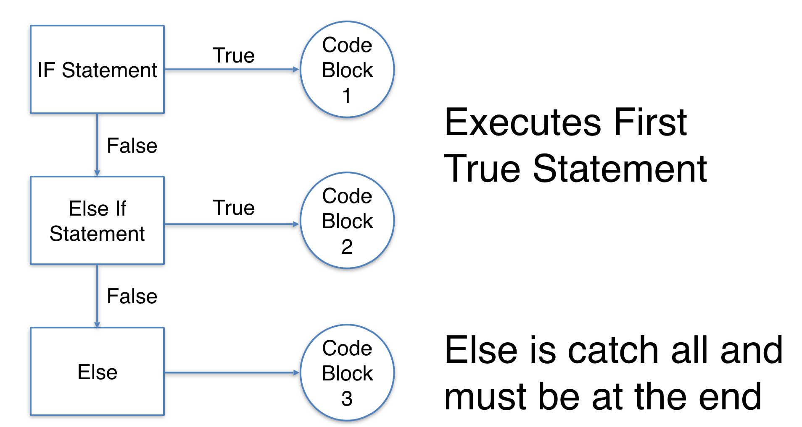

Conditional Statements¶
We’ll use an if statement if we want some code to only run if a certain condition is true.

QUESTION: Do you like Travis Scott?
Below we have a variable that will be saved as travis_scott. If it is yes, recommend your favorite Travis Scott song. If no, please provide another recommendation.
travis_scott = input("Do you like Travis Scott? (yes or no)")
-------------------------------------------------------
StdinNotImplementedErrorTraceback (most recent call last)
<ipython-input-1-3cd18fac025f> in <module>
----> 1 travis_scott = input("Do you like Travis Scott? (yes or no)")
~/opt/anaconda3/envs/for_ds/lib/python3.8/site-packages/ipykernel/kernelbase.py in raw_input(self, prompt)
855 """
856 if not self._allow_stdin:
--> 857 raise StdinNotImplementedError(
858 "raw_input was called, but this frontend does not support input requests."
859 )
StdinNotImplementedError: raw_input was called, but this frontend does not support input requests.
if travis_scott == 'yes':
print('Maybe you will like Butterfly Effect on the Astroworld album.')
else:
print('Maybe you would like Patsy Cline?')
Maybe you will like Butterfly Effect on the Astroworld album.
Loops¶
A for loop will iterate over any collection in python. For example, if we wanted to iterate over the following list, we could do something like:
for name in names:
print(name)
names = ['lenny', 'hennessy', 'oden', 'hardy']
for name in names:
print(name)
hennessy
oden
hardy
You can also loop through sequences of numbers with the built in range() function.
# Range
for num in range(4):
print(num)
0
1
2
3
Putting it together¶
Now, if we have a collection of objects, we can loop over that collection and run a test. This is typically how we would use these ideas.
for name in names:
if name == 'hennessy':
print('Hennessy is here.')
elif name == 'oden':
print('Oden in the house.')
else:
print(f'{name.capitalize()} is here.')
Hennessy is here.
Oden in the house.
Hardy is here.
PROBLEMS¶
Loop over the following list of artists and determine whether or not the artist is “Drake”. If yes, print “yeah, it’s Drake” otherwise print “nope, not Drake”.
artists = ['nipsey hussle', 'travis scott', 'drake', 'patsy cline', 'loretta lynne']
Loop over the artists list and print the capitalized version of each name.
Loop over the artists list and print the length of each string.